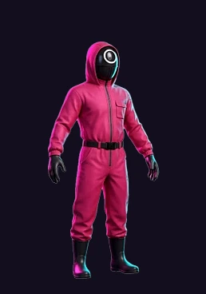
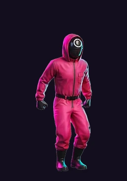
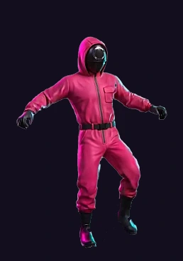
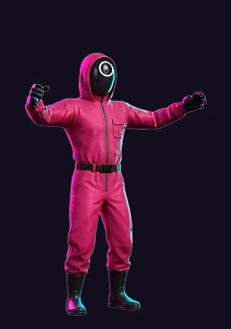
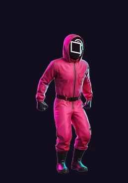

Всё, что нужно, чтобы собрать игру 1 в 1 по макетам Figma: скелеты Spine, текстуры, плиты, фон и спецификация.
Обновлено 16.10.2026 · открыть живое демо
Формат Spine 4.2.00. Тело — покадровая подмена аттачментов: 116 кадров настоящего 3D-рендера переключаются таймлайном слота char. Поэтому движение живое, а не марионеточное. Символ на маске — отдельный слот на кости mask, она каждый кадр едет за центром лицевой пластины.
Текстуры идентичны попиксельно, включая bleed-кайму. В рантайме берите webp, в редакторе png.
| Анимация | Кадров | FPS | Длительность | Луп | Когда играет |
|---|---|---|---|---|---|
idle | 24 | 12 | 1,92 с | да | стоит на плите, ждёт хода |
jump | 36 | 60 | 0,58 с | нет | шаг на следующую плиту |
fall | 24 | 30 | 0,77 с | нет | наступил на ловушку |
win | 32 | 30 | 1,03 с | да | забрал выигрыш / финиш |
| Событие | Анимация | Время | Что делать |
|---|---|---|---|
takeoff | jump | 0,08 с | звук отталкивания, старт полёта по дуге |
land | jump | 0,50 с | звук приземления, проверка плиты |
glass_break | fall | 0,05 с | запустить разбитие стекла, см. раздел 04 |
default — общее тело, 116 кадров. Поверх включается circle, square или triangle: skeleton.setSkinByName('circle').scale = 0.200 (у ботов 0,200–0,205, чтобы толпа не выглядела клонами) и scaleY = -1, потому что ось Y канваса смотрит вниз, а у Spine вверх.root стоит ровно под ступнями — ставьте её в точку опоры на плите, вертикальных поправок не нужно. Рост стоящей фигуры 840 единиц, то есть 168 px на экране.state.addAnimation(0, 'idle', true, 0).Одна анимация idle, луп: туман двумя слоями с разной скоростью, бегущий неон, вращение портала. Все пять текстур рисуются аддитивно (lighter). Туманные полосы шириной 7680 прокручиваются бесшовно, по ширине их ресайзить нельзя.
12 плит, по одной на ячейку: tile-{ряд}-{колонка}.png, ряд 0 — дальний, ряд 1 — ближний. Перспектива запечена в спрайт, масштабировать по колонкам не нужно. Зелёная подсветка безопасной плиты — не отдельная картинка, а наложение цвета поверх спрайта.
Процедурная анимация на канвасе, спрайтов для неё нет. Параметры, по которым она собрана:
(смещение от удара) × 1,6 ± 40, по Y от −190 до −55. Вращение ±7 рад/с, гравитация 1700 px/с².scaleY = 0,55 + 0,45·cos(t · spin), spin от 4 до 11.Для глазами посмотреть. В сборку класть не нужно, в игре всё это рисуется из Spine.





skeleton.json в Spine, рядом положите character.atlas и character_frames.png.circle и прогоните idle: фигура дышит, не крутится и не шагает, рост не меняется.jump на 0,25× скорости: голова в верхней точке целая, символ на маске не отрывается.fall: под ногами нет посторонних обрезков фона.